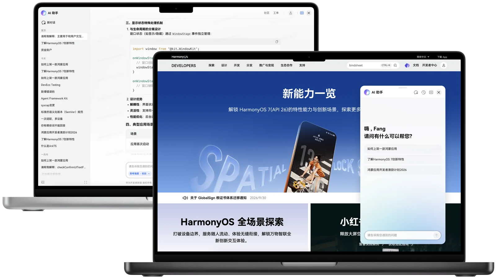
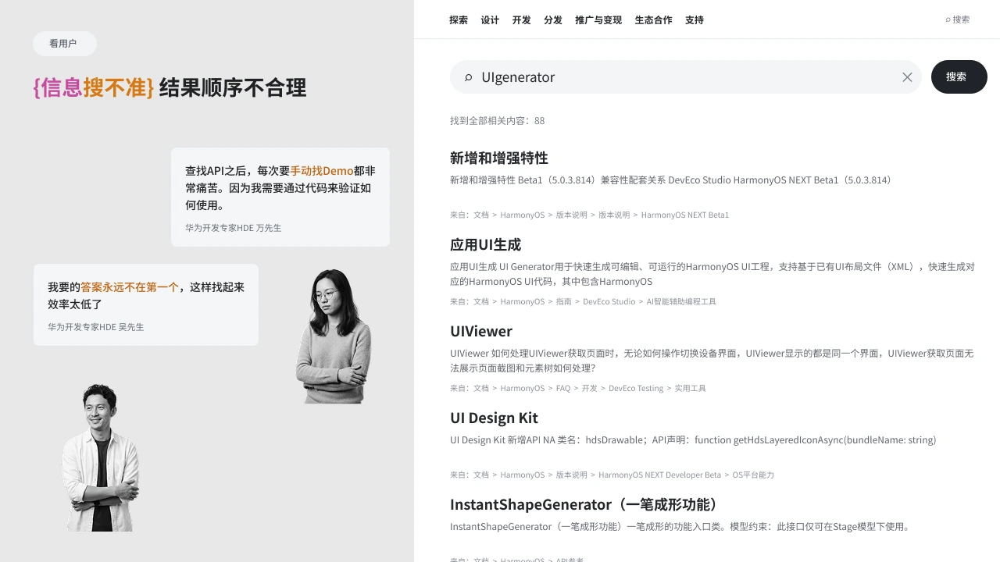
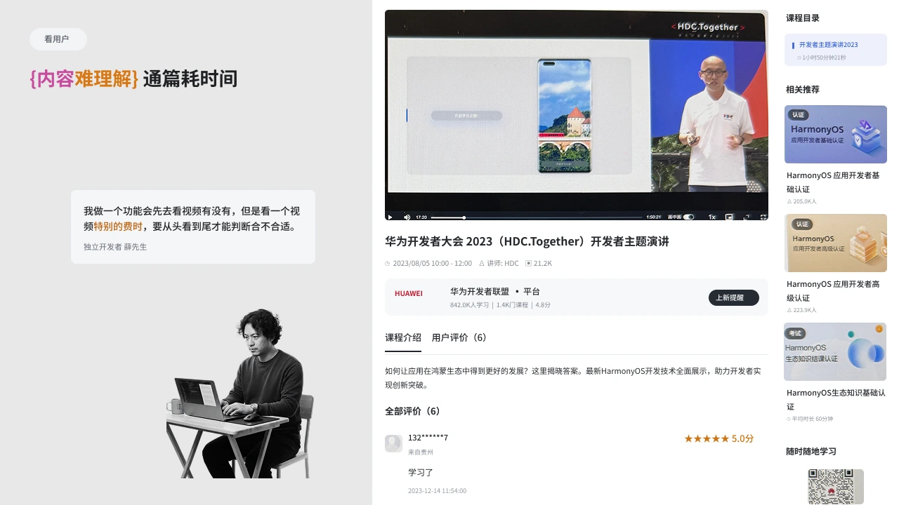
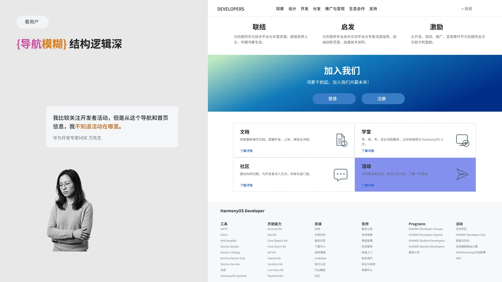
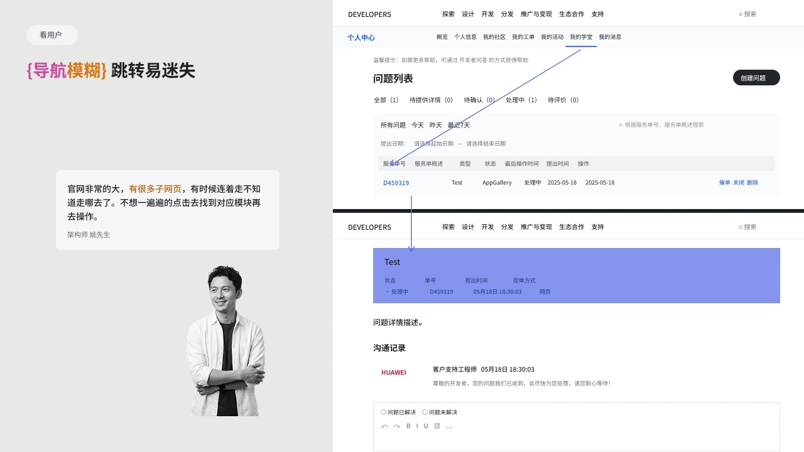
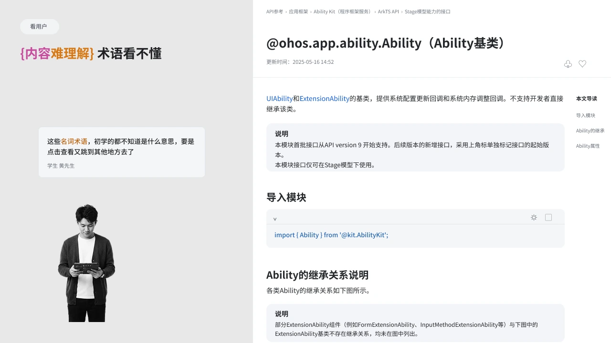
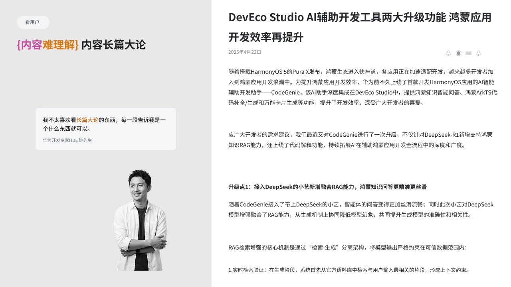
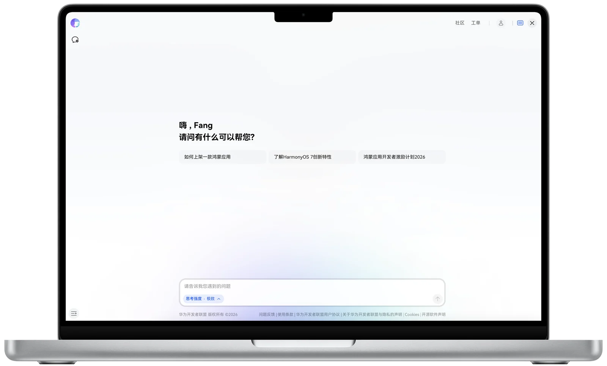

服务链路梳理
从开发者真实问题出发，梳理全站入口、页面关系与服务承接。
SELECTED WORK / 01 — AI PRODUCT EXPERIENCE
从零散答疑，走向可继续的任务与服务。
本案例聚焦开发者官网中的 AI 交互机制：入口、形态、上下文与状态。平台信息架构与跨模块服务，在官网案例中展开。

在多人协同项目中，我负责 AI 助手 1.0 的全量交互设计，覆盖场景入口、任务流程、关键状态与细节交互，并推进上线交付。
从开发者真实问题出发，梳理全站入口、页面关系与服务承接。
明确入口、形态、上下文与状态，让 AI 与原有页面协同。
将概念转化为多场景方案，延伸到后续架构演进与规范。
责任聚焦于产品体验与交互机制；后续 2.0 / 3.0 的内容作为持续演进方向，与 1.0 的真实交付分开呈现。
AI 的价值不止是“回答”，而是逐步改变开发者完成任务的方式，以及官网提供内容的方式。
让开发者在当前页面找到可用答案，减少反复检索与页面切换。
设计对象：信息获取效率。用户发起问题后，AI 结合搜索、文档、社区等当前场景就地响应，连接可信信息与相关服务。
真实上线 · 1.0 已落地从单次回答延伸到任务与服务承接，关注回答之后的下一步。
设计对象：任务完成效率。AI 继续理解上下文、形成方案、关联工具和服务，从回答问题推进到完成目标。
持续演进 · 下步思考 · 能力演进桥梁将官网价值从内容呈现，转向可被连接和调用的服务体系。
设计对象：内容供给方式。官网成为人和 AI 都能理解、引用、调用和验证的可信内容与能力基础。
方向探索 · 前瞻探索这不是三个孤立版本，而是在 AI 时代，随着开发者行为改变，对“官网是什么”的持续回答。
1.0 / PROBLEM · 真实问题证据
结合用户研究与实际使用反馈，将问题归纳为搜索、导航与内容理解三类障碍，并通过对应页面说明问题发生的位置及其对任务的影响。
01 / SEARCH
搜索结果与需求不匹配，信息分散在多个页面。用户需要反复筛选和比对，才能找到与当前问题相关的内容。


02 / NAVIGATION
入口层级较深，模块之间的衔接不清晰。用户需要先理解网站结构，再通过多次跳转定位目标服务。


03 / UNDERSTANDING
专业术语和较长的技术内容增加了理解成本。用户找到资料后，仍需要辨认重点，并理解它与当前任务的关系。


配图用于定位问题场景，文字为反馈归纳；本节不展示研究数量、评分或比例。
场景感知、按需响应：用户主动发起后，AI 结合当前任务组织信息与服务。
官网结构固定，信息路径需要用户自行寻找。用户承担查找、理解与连接信息的成本。
用户发起问题后，AI 结合当前场景理解意图、聚合并解释信息，需要时连接对应服务。让帮助进入当前场景，让回答连接后续服务。
GOAL → CONTEXT → AI → CONTENT → SERVICE
03 / KEY DESIGN DECISIONS
围绕触发、分流、理解、控制与信任五个问题，呈现 AI 交互为什么这样设计，以及为此放弃了什么。
可发现性与不打断当前任务存在冲突；入口越主动，并不意味着帮助越有效。
采用低打扰入口，保留当前页面与上下文，由用户主动唤起；场景入口与统一入口互补。
取舍：不用主动弹窗换取曝光。接受需要用户主动发现，以保住阅读节奏和控制权。
更容易被发现，但打断阅读并增加认知负担。
保留当前页面与上下文，由用户决定何时进入。
把所有需求收进统一聊天框，会迫使用户离开当前任务，重新描述问题与页面上下文。
轻量需求就地解释、摘要；连续追问再进入完整助手，并承接已有问题、引用与草稿，保留返回原任务的路径。
取舍：不以一个聊天框覆盖全部需求。形态按任务深度分层，升级时不让用户重新开始。
术语、片段与整页内容对应不同阅读位置；统一的整页回答，未必能解决用户此刻的问题。
就地解释术语、提炼选中片段、提供整页摘要。让引用范围可见；页面切换时先确认，再更新上下文。
取舍：不默认把整页都当成问题。先匹配当前阅读范围，信息不足再澄清，复杂任务再进入对话。
用户需要知道系统正在做什么，也需要能停止、恢复，并理解为什么某些请求无法继续。
生成中持续反馈并允许停止；中断后提供继续路径、超时支持重试。超出能力或安全边界时说明原因，引导重新提问。
取舍：优先呈现“等待—停止—恢复—边界”的关键判断，不让通用异常状态淹没 AI 过程控制。
回答可能不完整或存在偏差。开发者需要知道信息从哪里来，才能判断是否采用。
回答关联引用与原始文档，支持返回来源核对；社区经验作为补充，与官方内容区分，不替用户作最终判断。
取舍：不靠流畅表达制造确定感。让来源、引用范围与信息性质可辨认，把判断权交还给开发者。
04 / SITE-WIDE EXPERIENCE
将分散的 AI 接触点组织为同一套体验：从局部解释到场景对话，再到更完整的任务空间。
嵌入搜索、文档和内容页面，低打扰地提供即时辅助
结合当前上下文解释、追问与连续解决复杂问题
全站入口，承接开放问题与跨页面探索
TASK CONTINUITY
页面关系、对话关系与状态规则需要一起设计。用户可以随时进入、继续，也能返回原任务。
SYSTEM ASSET / 可复用资产 · 1.0 设计沉淀
三阶交互形态 + 五项体验机制：形态匹配任务深度，入口、形态、上下文、状态与升级机制支撑全站一致体验。
前文五个关键决策解释设计取舍；这里将方案归纳为入口、形态、上下文、状态与升级五项机制，供跨场景复用。
搜索 / 文档 / 页面 / 服务 / 全站助手。入口贴近问题现场，降低用户主动寻找 AI 的成本。
控件 / 助手 / 视窗。分别承接就地辅助、连续追问与跨页面探索，形态随任务深度变化。
当前页面 / 当前内容 / 当前任务 / 历史对话。上下文决定回答是否贴合，也决定服务能否继续。
理解中 / 生成中 / 无法回答 / 重试 / 转人工。反馈要说明状态、边界和用户可执行的下一步。
简单问题 → 控件；连续探索 → 助手；复杂任务 → 视窗。升级时承接已有问题与上下文。
洞察：AI 时代的体验设计，不再是设计一个“好用的界面”，而是设计一套“在不确定性中维持用户心流与控制权的动态服务契约”。
AI 助手 1.0 已在开发者官网对外开放，用户可实际使用。交付覆盖场景入口、交互形态与关键状态。
访问公开官网 HarmonyOS 开发者官网
连接官网、文档、搜索、课程与社区。
覆盖场景入口、任务流程、关键状态与细节交互。
补齐生成、中断、异常、历史等路径。
让局部帮助与完整助手可以连续使用。

完成从场景入口、内容理解到异常恢复与服务承接的交互交付，支持用户在当前任务中获取帮助并继续操作。
1.0 以“三阶交互形态 + 五项体验机制”组织全站体验；2.0 探索从回答走向任务完成；3.0 进一步思考官网如何成为人和 AI 共用的可信内容与能力基础。
从“回答一个问题”走向“帮助用户继续任务”。服务不应停在内容输出，而需要与真实场景中的下一步建立联系。
从开放问题开始，通过澄清意图、补充上下文和推荐下一步，帮助用户持续推进任务。
开放问题 → 澄清意图 → 连续解决围绕明确目标组合知识、代码与服务，让用户选择合适的方式完成具体任务。
明确目标 → 组合工具 → 推动执行通过分屏并行呈现当前内容与关联知识，减少跨页查找，保持开发者连续学习的上下文与心流。
当前概念 → 分屏探索关联场景 → 保持学习上下文官网中的文档、视频与 Codelabs，本质上都是开发者的学习资料。开发者遇到问题或需要学习时，不应在不同模块和资料间反复穿梭；随航让当前内容与关联知识并行呈现，减少跨页搜索对学习上下文的打断。
把官网从内容展示的终点，重新理解为开发者服务的连接点。不仅让人找到内容，也思考内容与服务如何在 AI 工具及新的使用方式中继续发挥价值。
内容不再只服务一个固定页面，而以可组合的数据与实体存在；同一份可信内容可根据用户、任务和场景生成不同的最优路径。
来源、版本、更新时间与适用范围可追溯。
信息以可组合、可关联的数据与实体存在。
为人提供可视、可读、可操作的网页体验。
为 AI 提供结构化、可获取、可调用的能力入口。
根据用户、任务与场景组合出不同的使用路径。
该方向由 3 位核心设计成员与 1 位用研共同探索，源于 2026 HDC 对独立开发者声音的观察；本案例仅呈现设计概念与判断，不展开具体产品方案。
从可用的回答，到可继续的任务，再到可持续的服务。
06 / MY CONTRIBUTION
负责 1.0 全量交互设计与上线交付，推进 2.0 交互方案，参与 3.0 方向共创，并沉淀可复用的体验规则。
01 / 1.0 已上线
设计全站唤起、拖拽吸附、小窗与沉浸态切换，以及跨页面上下文衔接，支持场景内唤起与切换，减少对当前任务的打断。
围绕生成等待、中断与上下文变化，明确状态反馈和继续路径；区分敏感内容提示、权限反馈与请求异常，帮助用户理解边界并继续操作。
02 / 2.0 已汇报 · 未开发
针对跨页面学习与探索的中断，设计当前内容与关联知识并行呈现的分屏方案，让开发者在保留阅读上下文的同时继续探索。
将我提出的随航模式、既有对话模式与同事提出的工具模式统一梳理，完成模式切换、上下文承接与状态反馈等细节交互。
03 / 3.0 团队共创 · 概念探索
从访谈与大会反馈中观察到，部分开发者开始借助 AI 获取和理解文档，由此提出官网内容如何被 AI 可靠获取与引用的问题。
与用研及核心设计成员共同探索可信内容的组织与服务连接方式，为官网同时服务开发者和 AI 提供方向参考，本阶段为概念探索。
04 / SYSTEM ASSET
将“三阶交互形态 + 五项体验机制”整理为可复用的交互规则，明确入口、形态、上下文、状态与升级的设计依据。
将关键流程与状态要求整理为可查阅的规范，供设计、研发与测试在后续场景接入和方案核对时使用。